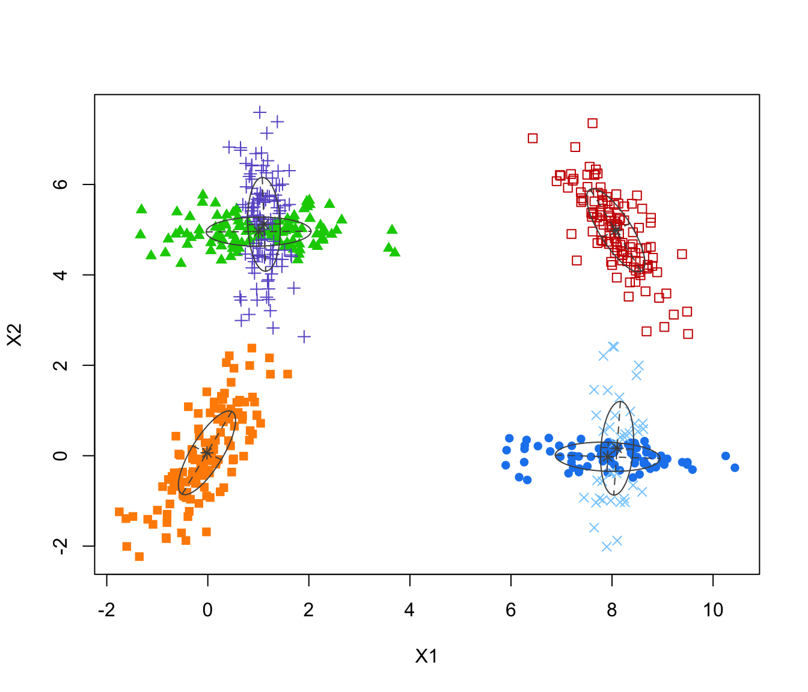
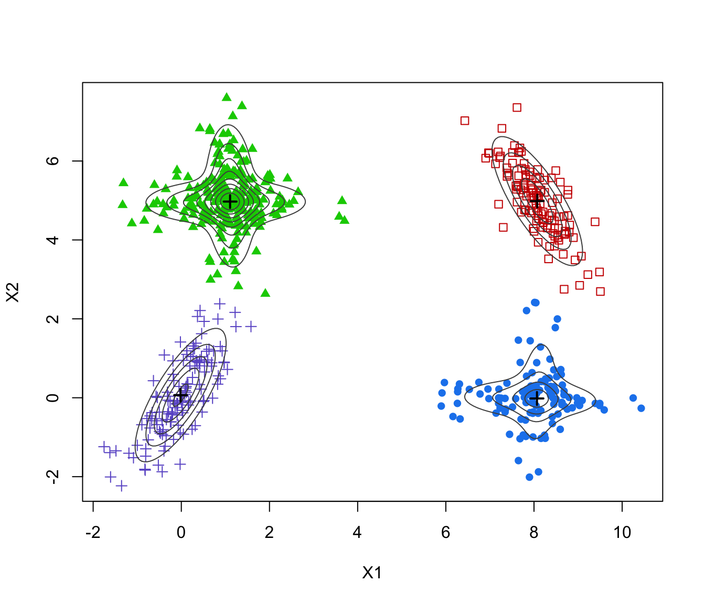
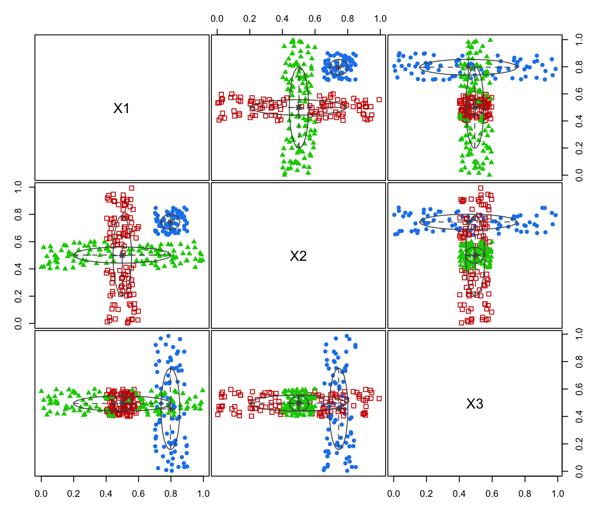
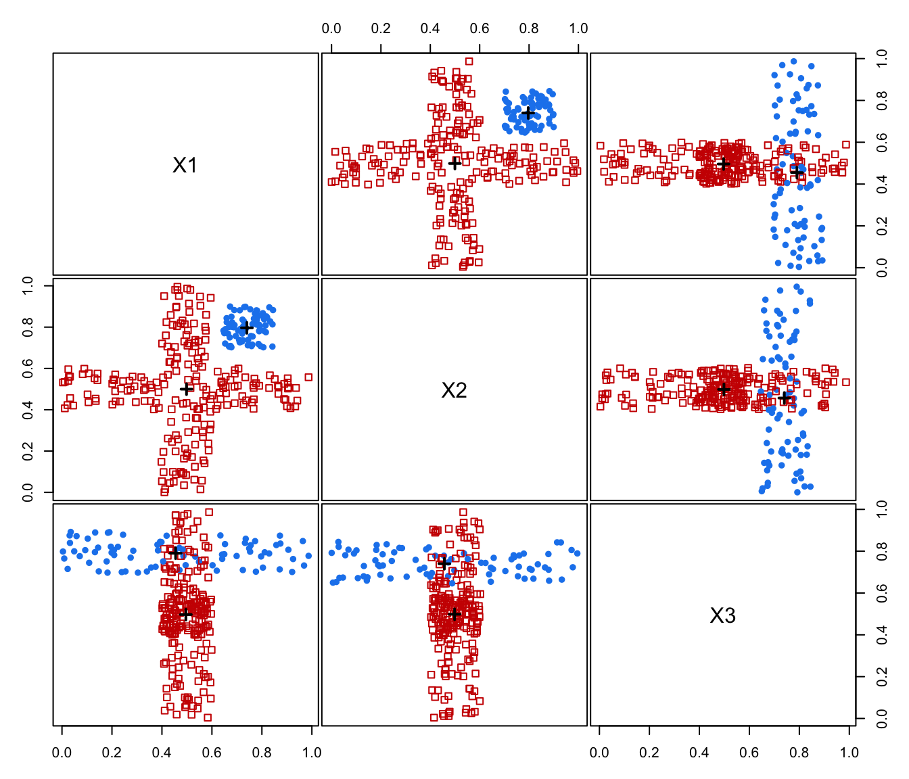

Modal EM algorithm for Gaussian Mixtures fitted via mclust package
MclustMEM.RdModal-clustering estimation by applying the Modal EM algorithm to Gaussian mixtures fitted using the mclust package.
Arguments
- mclustObject
An object of class
'Mclust'or'densityMclust'obtained by fitting a Gaussian mixture via, respectively,MclustanddensityMclust.- data
If provided, a numeric vector, matrix, or data frame of observations. If a matrix or data frame, rows correspond to observations (\(n\)) and columns correspond to variables (\(d\)). If not provided, the data used for fitting the Gaussian mixture model, and provided with the
objectargument, are used.- x, object
An object of class
'MclustMEM'.- digits
The number of significant digits to use for printing.
- ...
Further arguments passed to or from other methods.
Value
Returns an object of class 'MclustMEM'. See also the output returned by GaussianMixtureMEM.
References
Scrucca L. (2021) A fast and efficient Modal EM algorithm for Gaussian mixtures. Statistical Analysis and Data Mining, 14:4, 305–314. https://doi.org/10.1002/sam.11527
Examples
# \donttest{
data(Baudry_etal_2010_JCGS_examples, package = "mclust")
plot(ex4.1)
GMM <- Mclust(ex4.1)
plot(GMM, what = "classification")

MEM <- MclustMEM(GMM)
MEM
#> Call:
#> MclustMEM(mclustObject = GMM)
#>
#> 'MclustMEM' object containing:
#> [1] "data" "n" "d" "parameters"
#> [5] "modelName" "G" "iter" "nmodes"
#> [9] "modes" "path" "logdens" "logvol"
#> [13] "classification"
summary(MEM)
#> ── Modal EM for GMMs ───────────────────
#>
#> Data dimensions = 600 x 2
#> Mclust model = EEV,6
#> MEM iterations = 17
#> Number of modes = 4
#>
#> Modes:
#> X1 X2
#> mode1 8.06741504 -0.01772230
#> mode2 8.07370160 4.98485099
#> mode3 1.10622966 4.97230749
#> mode4 -0.01639289 0.06464381
#>
#> Modal clustering:
#> 1 2 3 4
#> 118 122 228 132
plot(MEM)

plot(ex4.4.2)
GMM <- Mclust(ex4.4.2)
plot(GMM, what = "classification")

MEM <- MclustMEM(GMM)
MEM
#> Call:
#> MclustMEM(mclustObject = GMM)
#>
#> 'MclustMEM' object containing:
#> [1] "data" "n" "d" "parameters"
#> [5] "modelName" "G" "iter" "nmodes"
#> [9] "modes" "path" "logdens" "logvol"
#> [13] "classification"
summary(MEM)
#> ── Modal EM for GMMs ───────────────────
#>
#> Data dimensions = 300 x 3
#> Mclust model = EVI,3
#> MEM iterations = 15
#> Number of modes = 2
#>
#> Modes:
#> X1 X2 X3
#> mode1 0.7964915 0.7444244 0.4547285
#> mode2 0.4996361 0.5014374 0.4957522
#>
#> Modal clustering:
#> 1 2
#> 78 222
plot(MEM, addDensity = FALSE)

# }